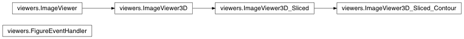

Viewers¶
Implements various viewers to display 3D data
-
class
viewers.FigureEventHandler(fig)[source]¶ Class to implement general event handling for matplotlib figures. In particular this class allows for easy event handling within different subplots.
-
fig= None¶ figure handle
-
ax_events= None¶ dictionary that keeps track of all the events
-
supported_events= None¶ events that are currently supported by the figure event handler
-
sync_d= None¶ dictionary to hold information about synchronization of subplots (for synchronized slicing)
-
synchronize(axes)[source]¶ Sets synchornization information (i.e., which axes need to be synchronized)
Parameters: axes – list of axes
-
add_axes_event(eventname, ax, eventfcn, getsyncfcn=None, setsyncfcn=None)[source]¶ Associates events with a particular axis
Parameters: - eventname – event name: ‘button_press_event’, not yet supported: ‘button_release_event’, ‘key_press_event’, ‘key_release_event’
- ax – axis handle
- eventfcn – function that should be called
- getsyncfcn – function that returns synchronization information
- setsyncfcn – function that takes synchronization information
-
-
class
viewers.ImageViewer3D_Sliced(ax, data, sliceDim, textStr='Slice', showColorbar=False)[source]¶ 3D image viewer specialization to 3D sliced viewing
-
sliceDim= None¶ dimension to slice
-
textStr= None¶ title string
-
index= None¶ slice index to display
-
showColorbar= None¶ dispaly colorbar True/False
-
-
class
viewers.ImageViewer3D_Sliced_Contour(ax, data, phi, sliceDim, textStr='Slice', showColorbar=False)[source]¶ Specialization of 3D sliced viewer to also display contours
-
phi= None¶ map
-
get_phi_slice_at_dimension(index)[source]¶ Get map (based on which we can draw contours) at a particular slice index
Parameters: index – slice index Returns: returns the map at this slice index
-